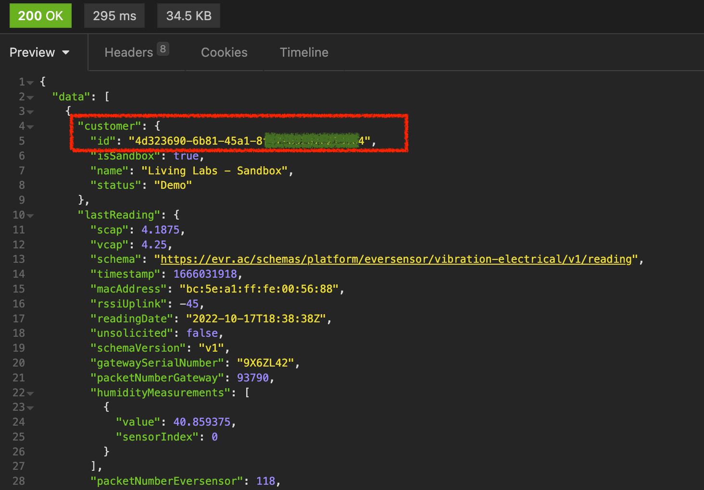

From Everactive’s Webhook Subscriptions to Fluentd & S3 üîó
Disclaimer: this solution is totally overengineered. Only for learning purposes. You don’t want to use this in production, or do you?…üòú
Everactive’s Managed Network ensures connectivity, uptime, and reliable & secure data transfer into our Platform. We understand that you need a steady stream of new data to transform into high-value insights to package as innovative, hyper-scale IoT applications to your end users. The Everactive Edge Platform gives you direct programmatic access to the data returned by the Eversensors. The data is made available via different channels: RESTful APIs, Webhooks, or MQTT Subscriptions.
click image to zoom in
A Webhook is an HTTP callback defined by the user. They are very useful to build pipelines based on events. Typically, when the event is triggered, an HTTP request will be sent to a defined target with the event’s information as the payload. In this article we will leverage the Everactive Edge Platform Webhooks Subscriptions to transfer sensor readings to an AWS S3 bucket using Fluentd as the middleware.
The Webhook will be triggered every time a new sensor reading is received. The request will be sent to a fluentd HTTP input listener. Finally, a fluentd S3 output will upload the files to AWS S3.
click image to zoom in
Fluentd
If you are not familiar with Fluentd visit their official website https://www.fluentd.org/ to learn about the tool. Originally, fluentd was designed to aggregate logs, but it has grown into a more generic data collector and transfer tool. It is light, fast, and simple to use. I’m sure you will find many uses for it.
Implementing the data Flow üîó
1. Create API Keys üîó
All Data Subscriptions are created via the Everactive Platform API. Before we can make any request, we have to prepare a set of Keys that will grant us access to the API. If you haven’t already, use this guide to create your first set of API Credentials. Make sure you have included the privileges for User and Developer in the scope. Retrieve the Client ID and the Client Secret and keep them handy, we’ll need them for our exercise.
2. Authenticate to get an Access Token üîó
Everactive API follows the OAuth2 security flow. To test your credentials you need to make an authentication request using the Client ID and Secret you just created:
curl --request POST \
--url https://api.data.everactive.com/auth/token \
--header 'Content-Type: application/json' \
--data '{
"client_id": "{your API client id}",
"client_secret": "{your API secret }",
"grant_type": "client_credentials"
}
'
This will return a response with a valid access_token, you will use this token for the next requests.
click image to zoom in
3. Retrieve your List of Sensors and Customer ID üîó
Let’s give this access token a try by getting the list of active sensors in your account and your own Customer ID — You will need this ID in the next steps.
curl --request GET \
--url 'https://api.data.everactive.com/ds/v1/eversensors?page=1' \
--header 'Authorization: Bearer {the token goes here}'
The response is an array of Eversensor data that includes, for every sensor, its last reading and the associated customer account. Take note of the customer id, (we will use 4d323690-6b81-45a1-8000-000000000000 for this example) we will use it in our MQTT subscription.
 click image to zoom in
3. Prepare the Fluentd service üîó
For the sake of this exercise we will run fluentd in Docker. We have prepared a github repo with some example code that should speed things up: https://github.com/everactive/fluentd-s3-docker
To run the service locally:
- Clone or download the repo
- Create the folder
fluentd-s3-docker/data - Create the file
secrets.env(example provided) with your AWS Keys - Build and Run the container using docker compose:
$ docker compose up --build
The file fluentd-s3-docker/fluentd/flow.conf contains all the configuration for the flow we are building. The flow starts with an HTTP input source on port 9880.
click image to zoom in
Every message is received and sent to an S3 output plugin. This is a store plugin, designed to aggregate messages in a buffer before sending them to the storage destination. Using a buffer is very important because we don’t want to push to S3 on every single sensor reading - that could be costly- instead, we want to aggregate messages and then push one file with the set. In our example we will push to the S3 bucket data-repository every 60 seconds.
click image to zoom in
Before starting, make sure to enter your AWS API Keys in the secrets.env file for the S3 plugin.
After running the docker compose command you should see a message indicating that the service is ready: fluentd worker is now running worker=0
ngrok üîó
You can deploy the container anywhere you want to make it accessible by the Webhook Subscriptions. Here, to avoid the complication of deploying the service to the cloud, we will use ngrok to expose the local fluentd container to the internet in a secure way.
After installing, open a terminal and initiate a ngrok session with the same port as the fluentd service
$ ngrok http 9880
ngrok creates a public URL https://1a51-2601-647-4000-3060-cc16-9c62-39a8-8a90.ngrok.io routing traffic to our local service.
click image to zoom in
At this point we have fluentd listening on port 9880 for HTTP requests, —ngrok helped us expose the service on the public URL— and we have buffered store ready to send files to S3.
4. Create the Webhooks Subscription üîó
It’s now time to create the Webhooks subscription using the Everactive Edge Platform API. We can do this by calling the Create Webhooks endpoint. The request will return a 201 Created HTTP Status code when succeeds.
curl --request POST
--url https://dev-api.data.everactive.com/ds/v1/webhooks \
--header 'Authorization: Bearer {your access token goes here}' \
--header 'Content-Type: application/json' \
--data '{
"callbackUrl": "https://1a51-2601-647-4000-3060-cc16-9c62-39a8-8a90.ngrok.io",
"eventType": "sensor_reading",
"enabled": true,
"customerId": "4d323690-6b81-45a1-8000-000000000000",
"headers": [],
"errorHandling": {
"retryDelay": 3000,
"retryBackoff": 10000,
"maxRetries": 3,
"requestTimeout": 30000
}
}'
Let’s take a closer look at the request body:
"enabled": trueso that the Webhook starts the connection immediately."customerId": "4d323690-6b81-45a1-8000-000000000000", This is our Customer ID"callbackUrl": "https://1a51-2601-647-4000-3060-cc16-9c62-39a8-8a90.ngrok.io"This is the URL provided by ngrok and the target for the webhook."eventType": "sensor_reading"to get only the sensor readings.
Validate the data flow üîó
You can see the activity from the Eversensor in the sensor details panel of the Developer Console. Here you can see the most recent data that is coming from the sensor.
click image to zoom in
As the data arrives it should also be published to the Webhook. We can validate this by looking at the ngrok terminal, and the fluentd logs.
click image to zoom in
click image to zoom in
Finally, after 60 seconds have passed, we should be able to see files in the S3 bucket we setup in fluentd.
click image to zoom in
Reference Documentation üîó
- Sample Code: https://github.com/everactive/fluentd-s3-docker
- Authentication Request: https://everactive-ds-docs.readme.io/reference/data-services-api-overview#authentication
- Get Eversensors: https://everactive-ds-docs.readme.io/reference/get-eversensors
- Webhook Subscriptions: https://everactive-ds-docs.readme.io/reference/webhooks-overview
- Fluentd: https://www.fluentd.org/
- ngrok: https://ngrok.com/docs/getting-started
- AWS S3: https://aws.amazon.com/s3/